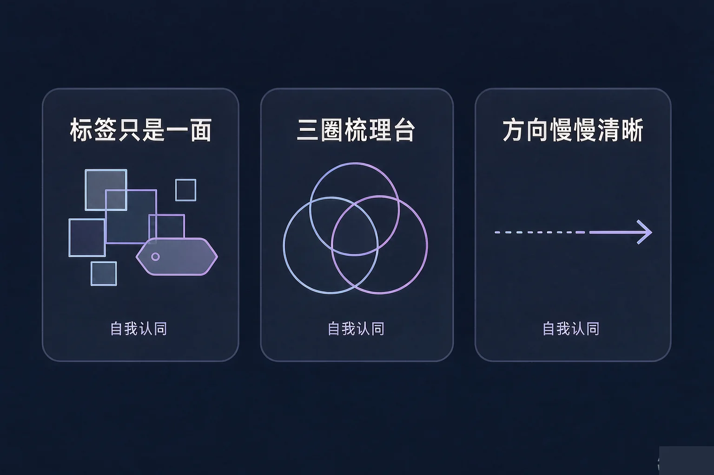
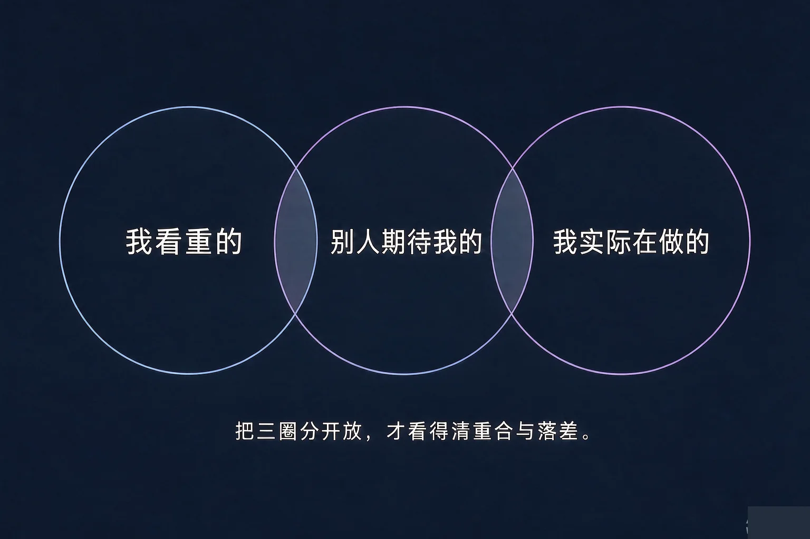
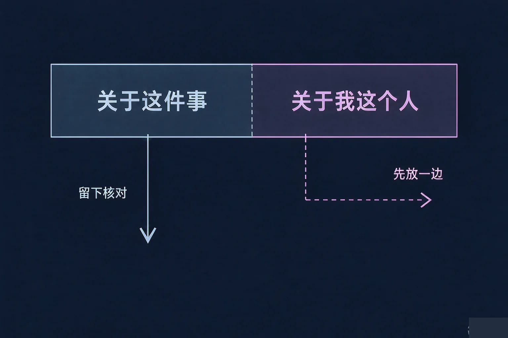

Gallery
v1.0.0 · skill v7.22.0
高中高一 · 认识自我
我是谁？别人说的和我想的，哪一个才算数？

选一个最贴近你此刻的困惑，后面的内容都会围着它展开。
选择或输入后，这节课会围绕你的问题展开。
先凭直觉选一个，选完立刻看到解释——错了也没关系，正好知道要重点听哪里。
1. 有人说你「就是不太爱说话」。下面哪种想法对你更有帮助？
标签只是其中一面，它描述的是别人观察到的部分，不是关于你的结论。错因提醒：常见错误是把别人给的一个标签当成对自己的定论，于是把别的部分都收了起来。
2. 你发现自己很看重把事做扎实，但实际时间大半花在刷手机上。比较合适的是：
看出落差不是批评自己，只是把情况说清楚，说清楚了才知道从哪里动。错因提醒：容易把「看出落差」误认为「给自己定罪」，这两种心态带来的结果差得很远。
3. 关于「我想成为什么样的人」，下面哪种说法更贴近这节课的想法？
方向可以边经历边清晰，一份能改的草稿比一个硬想出来的答案更耐用。错因提醒：误认为理想必须一次定好，是很多同学迟迟不敢动笔的原因。
别人认识你，常常是从一个词开始的。这个词有用，但它遮不住全部的你。
为什么要先学这个？你已经知道自己有多面；但别人给你的说法只有一个词，听多了容易当成全部；所以得先把「标签」和「我」分开。
标签是什么
标签是别人从某几次观察里抽出来的一个词：成绩好、话少、坐得住。它称为别人对你的一个印象，不是对你的判决。
你还有什么
你在意什么、和谁在一起最放松、做什么事会忘记时间、别人常来找你帮什么忙——这些同样属于你。
误认为「别人都这么说，那我就是这样」。一个词越被重复，越像真的，可它仍然只是一个词。

🔍 深层理解 换个角度再看一遍这件事，看看能不能说出背后的原理。
看见它：同一个人可以在老师眼里安静、在球场上喊得最大声、在好朋友面前话最多——三个都是真的，只是场景不同。
解释它：为什么一个标签这么容易变重？因为人习惯用最少的信息做判断，标签省事，于是就留下来了。
迁移它：这条规律对别人也一样成立：你给同学贴的那个词，多半也只是他的其中一面。
先点一条卡条，再点它更贴的那个圈。九个都放好之后，看看三个圈叠起来是什么样子。
三圈放好之后，会自然出现两种结果：对得上和对不上。它们都不评价你，只提供线索。

先选一个情境，再轮流点开三种处理方式，看看它们可能把你带到哪里。
情境：有人对你说，你这次考得这么差，就是因为你不够努力。这句话让你心里一沉，接下来一整晚都不太想说话。
常见错误是把一句评价直接当成关于自己的结论，于是要么整晚难受，要么干脆一句话都听不进去。其实一句话里通常只有一小块属于你：关于这件事的部分留下，关于我这个人的部分放一边。
先凭直觉选一个，选完立刻看到解释——错了也没关系，正好知道要重点听哪里。
1. 关于「别人怎么看我」，下面哪种想法更合适？
把评价当成信息来处理，比当成结论来接受或拒绝都好用。错因提醒：常见错误是走两个极端——要么全收，要么全挡，这两种都会让你少掉一条可能有用的信息。
2. 「我很看重把身体练好，但实际每周一次都没动」——这段话最像三圈里的哪一种情况？
看重和实际做法对不上，就是落差。它只描述现状，不等于你不自律。错因提醒：容易把落差误认为对自己的批评，于是要么放着不看，要么立刻定一个过严的计划，三天就散了。
3. 关于「我想成为什么样的人」，下面哪种做法更接近这节课的建议？
方向是边走边清晰的，草稿可以改。错因提醒：把「还没想清楚」和「我不行」搞混，是很常见的误解——没想清楚只是还没到时候。
三组线索都可以多选，选好点一下生成，看看它们拼起来指向哪里。它只是草稿，随时可以清空重来。
还没有勾选。先随便点两条也可以——草稿本来就是用来改的。
写下来，留给自己：
这段草稿里，哪一句你自己看了最想点头？把它抄在手机备忘录里，过一个月再读一遍。
先凭直觉选一个，选完立刻看到解释——错了也没关系，正好知道要重点听哪里。
1. 成绩单发下来，比预期低了一些。下面哪种做法更用得上这节课的方法？
把「这一次的结果」和「我这个人」分开看，是这节课最核心的动作。
2. 饭桌上，家里人说「隔壁孩子都考那么高，你怎么回事」。整理一下，这句话里可以留下的是：
留下能核对的担心，放下拿你和别人比较的那部分。错因提醒：常见的是全盘接下或者全盘顶回，两边都很消耗。
3. 有同学在朋友圈评论说「你这照片拍得真难看」。你可以：
一句关于照片好不好看的话，并不负责定义你这个人。错因提醒：把针对某件事的评价，误认为关于自己的结论，是这一课最容易搞混的地方。
回到开头那个问题——我是谁：这节课不给你答案。但你已经有了工具：把说法分开放好，把评价拆成两半，把方向写成草稿。有这三样，这个问题就可以慢慢想清楚。
小口诀，帮你记住这三步：标签拿下来看一眼，评价拆成两半走，方向写成草稿慢慢修。
给别人讲一遍：请用「看重、期待、实际」这三个词，说说你身上一处重合和一处落差。
三层练习，做完第一、二层就算通关；第三层留给愿意继续探索的同学。
⭐ 基础巩固（必做）
⭐⭐ 能力应用（必做）
⭐⭐⭐ 迁移挑战（选做）
左边是学它之前要先会的，右边是学会之后可以继续探索的，下面是同一领域的伙伴知识。
图谱正在加载：首次进入需下载知识索引（约 1–3 秒），加载完成后本行会自动消失。